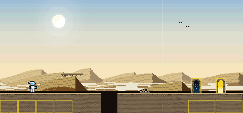
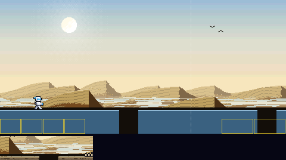
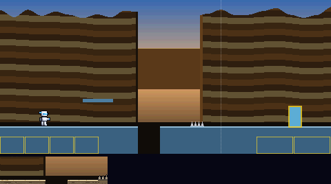
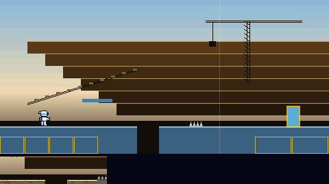
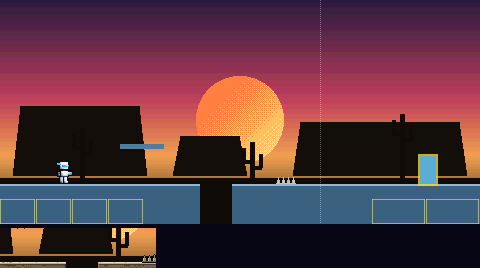
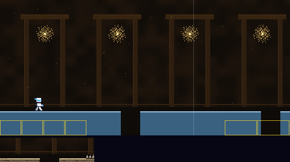
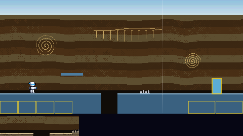
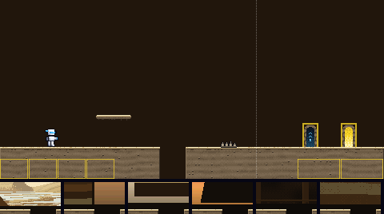

The way to Quake Man's door. Six backdrops, all built from his colours, in front of the bedrock picked in the first round. Batch 2 of 3.
Picked by the owner on 6 Nov 2026: backdrop 1, the desert dunes, redrawn with heat waves and more of a desert feel as they asked, in front of the bedrock picked in the first round. In the game since 6 Nov 2026.
Backdrop 1 behind the bedrock, with the player standing still. The dunes now have sharp crests, a sunlit side crossed by wind ripples and a slip face in shadow, in three ranks. Heat waves make the far dunes wobble, and a mirage shimmers along the horizon like water. Sand blows off the near crests, two vultures circle, and the sun is white-hot in a bleached sky. The boss door is on the left, the exit door on the right.

Each is shown behind today's plain pieces, so only the backdrop changes. The strip under it is its pit edge with the bedrock floor in front. The two marked MOVING scroll in layers, the far ones slower; their pictures move.






Picked in the first round. It shows the floor with a pit, a platform, spikes, the boss door (left) and the exit door (right), in front of today's flat colour. The strip under it is its pit edge against backdrops 1 to 6. The contrast numbers are the worst against any of the six; the game asks at least 2 for the ground, 4.5 for its lit edge and 4.5 for the white player on it.
